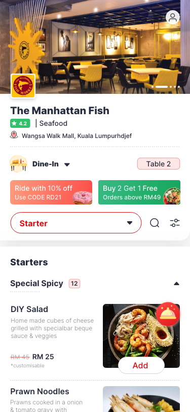
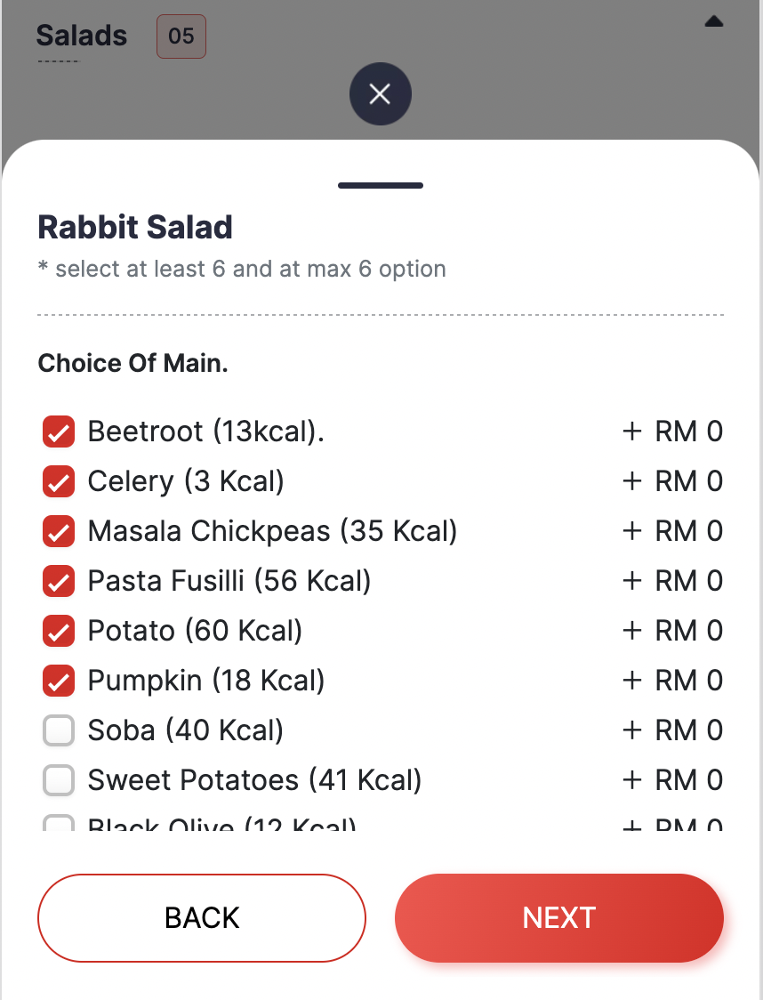
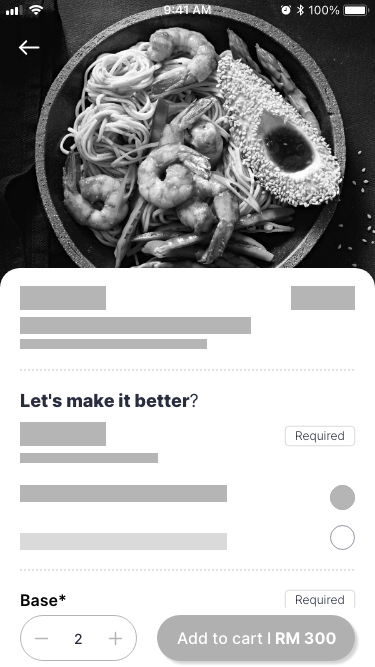
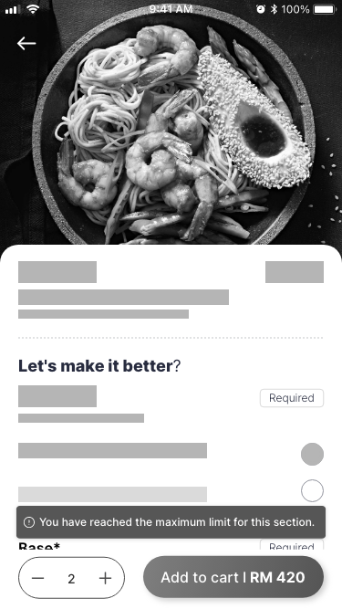
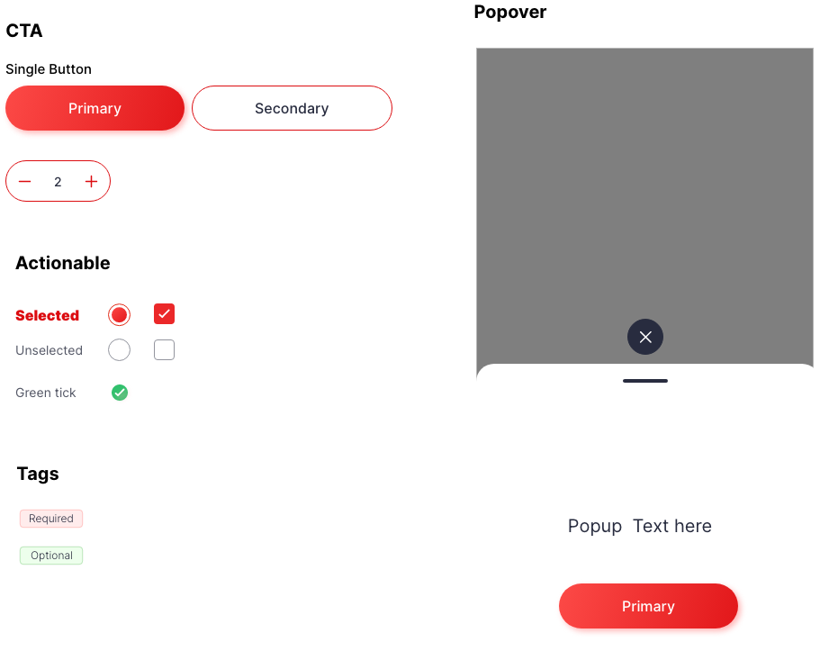
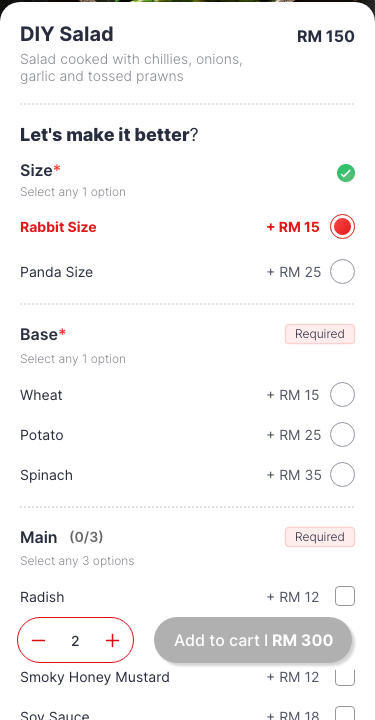
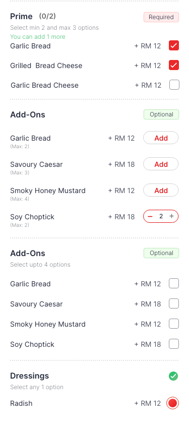
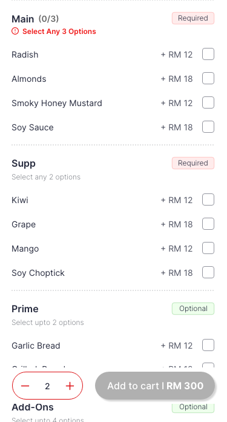
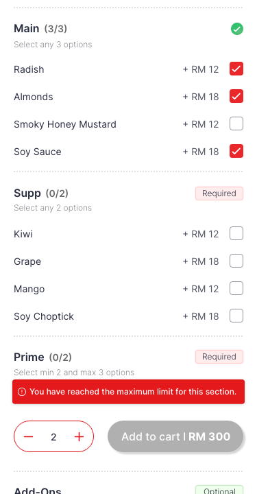

Fatimah, 26
Graphic designer in Subang Jaya. Wants to customize her own dish and order fast.
- Repetitive tapping to customize an order
- Confused when several customizing screens appear
Order
customization
for diners
Easy Eat lets people order at a restaurant table from their phone. Customizing a dish meant pop-up after pop-up, and guessing how many options you were allowed. I put every option on one screen that counts for you. QR adoption went up 8.3% in three weeks.



30+
user statements collected from diners and restaurant partners
8
problems I listed in the old customization flow
3
apps I studied end to end: Grab, Zomato and Swiggy
1on1 calls with restaurant partners
1on1 video calls with users
30+ user statements
I have to tap multiple times.Diner
I don't understand the communication (select option).Diner
I have to tap on a small box to select the variant.Diner
I wanted goals and frustrations from both sides: the person ordering, and the person serving. When the screen didn't explain itself, the server had to.
Graphic designer in Subang Jaya. Wants to customize her own dish and order fast.
Part-time restaurant server, paid RM 8 an hour. Working to pay for his studies.
01
Focus on what users need. This should help the business and restaurant partners both.
02
What's the timeline? When can developers pick it up? What does the business need? What are we trying to get out of this?
03
All variants and add-ons on one screen. Auto-scroll on each pick. Cart value updates as you go.
Every variant and add-on lives on the same page.
Required sections sit at the top. Optional ones follow.
"Select any 3 options" instead of a dead button.
Goal
2x
lead conversion on customization. That was the target we set out with.
Optional sections
5
options shown up front. More and less to expand or collapse the rest.
Counter
0/3
picked out of allowed, in the section tag. It doesn't work for min and max sections, where there's no fixed upper limit.






01
The whole row is the tap area, not just the small checkbox.
02
"Main (0/3)" goes up as you pick, and the price moves with it.
03
Each required section ticks itself off when it's done.
04
Fixed amounts per add-on. At the max, the plus greys out and you're told why.


I wrote the problems down first, then matched each one to a change. These four mattered most.
People got confused when one customizing screen led to another.
Changed: every variant and add-on on one screen, required first.
People tapped it, nothing happened, and they got confused.
Changed: tapping it scrolls to the missing required section, highlights it and vibrates.
No way to tell how many were picked or how many were left.
Changed: the count sits in the section tag, with a green tick when it's done.
Pick one too many and the button went grey. Nothing said why.
Changed: a message for 5 seconds that you've hit the max. The extra pick isn't added.
+8.3%
QR adoption rate, three weeks after the feature went out.
The customization screen got much better. We ran user testing along the way to check people understood it, and found new ways to keep them engaged.
Screens
1
for every variant and add-on. Before, a chain of pop-ups.
Tap target
Row
The whole row selects. Before, only the small box.
Max-limit message
5s
on screen. Before, the button went grey and said nothing.